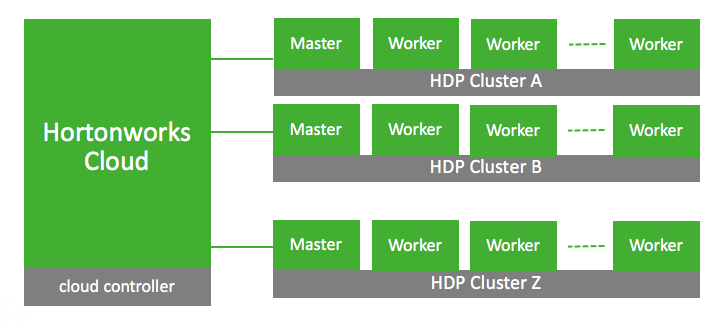

Architecture
The two primary components of Hortonworks Cloud are: the cloud controller (or "control plane"); and one or more clusters being managed by that controller.
The cloud controller runs on an EC2 Instance and is used as the central place for launching and managing the clusters. A cluster runs on multiple EC2 Instances and each cluster used for storing and processing data.

Cloud Controller
Runs on a single EC2 Instance.
Cluster Types
| Cluster Type | Primary Services | Description |
|---|---|---|
| Data Science (Spark 1.6) | Spark, Zeppelin | XYZ |
| Data Science (Spark 2.0) | Spark, Zeppelin | XYZ |
| EDW (Core Hadoop, Hive, Pig) | MapReduce, Hive, Pig | XYZ |
Types of Cluster Nodes
- Master Node. Runs the components for managing the cluster, including Ambari, HDFS storage, processing tasks, as well as other master components depending on the cluster type.
- Worker Node. Runs the components that are used to executing processing tasks (NodeManager) and handling storing data in HDFS (DataNode).
| Cluster Type | Master Node | Worker Node |
|---|---|---|
| Data Science (Spark 1.6) | NameNode, ResourceManager, SparkHistoryServer | NodeManager, DataNode |
| Data Science (Spark 2.0) | NameNode, ResourceManager, SparkHistoryServer | NodeManager, DataNode |
| EDW (Core Hadoop, Hive, Pig) | NameNode, ResourceManager, HiveServer2 | NodeManager, DataNode |